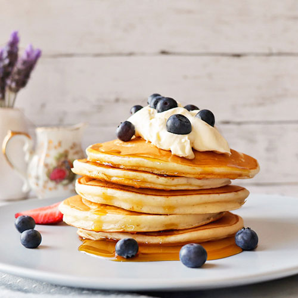

Pancakes

Ingrediente
- 250ml de lapte
- 200g faina de grau
- 3 linguri ulei de floare soarelui
- 3 linguri de zahar
- 1 ou de gaina
- 1 lingurita praf de copt
- 1 praf sare
- cateva picaturi esenta de vanilie
Mod de preparare
- Într-un bol amestecăm laptele, oul, uleiul și zahărul cu ajutorul
unui tel sau mixer, tot aici adăugăm câteva picături de esența de
vanilie.
- În alt bol amestecăm ingredientele rămase, făina, praful de copt și
sarea.
- Apoi adăugăm treptat făina în lapte, amestecând bine pentru a nu
forma cocoloașe. Pentru pancakes vom obține un aluat mai gros decât
pentru clătite obișnuite.
- Încingem o tigaie antiaderentă de teflon sau în caz contrar putem
folosi foarte puțin ulei într-o tigaie obișnuită.
- Cu ajutorul unui polonic turnăm pe rând clătitele. Diametrul unui
pancake la mine a ieșit aproximativ 15 cm.
- Prăjim la foc mediu, până observăm că apar bule de aer care se sparg.
Atunci e momentul să întoarcem clătita. Așa procedăm cu restul
compoziției.
Clătitele americane sunt gata. Serviți după preferință cu miere, dulceață sau ciocolată topită. Puteți adăuga chiar și nuci, stafide, fructe proaspete sau uscate.